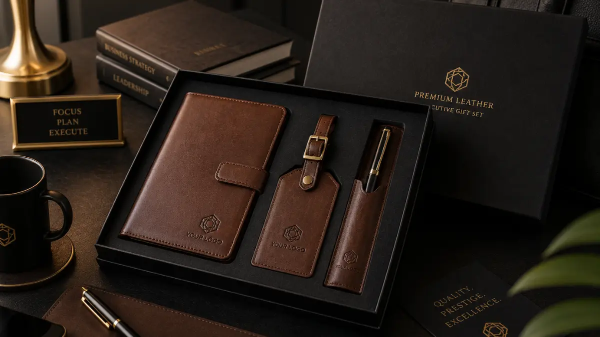

Souvenir Kantor Premium dengan Sentuhan Elegan untuk Meningkatkan Nilai Branding Perusahaan
 Hawa Nadira (haw)
3 Agustus 2026
7 Menit Baca
Hawa Nadira (haw)
3 Agustus 2026
7 Menit Baca

Souvenir kantor premium adalah barang corporate gift berkualitas tinggi seperti notebook, tumbler, pen, dan produk kulit yang dirancang untuk memperkuat citra profesional serta identitas brand perusahaan. Souvenir kantor premium menekankan kualitas material, desain rapi, dan kesan eksklusif. Pemilihan souvenir yang tepat dapat memperkuat kesan profesional perusahaan di mata klien maupun karyawan.
Souvenir kantor premium adalah barang corporate gift berkualitas tinggi seperti notebook, tumbler, pen, dan produk kulit yang dirancang untuk memperkuat citra profesional serta identitas brand perusahaan. Souvenir kantor premium menekankan kualitas material, desain rapi, dan kesan eksklusif. Pemilihan souvenir yang tepat dapat memperkuat kesan profesional perusahaan di mata klien maupun karyawan. Material populer meliputi kulit asli, logam, dan kayu dengan finishing halus. Souvenir premium umumnya digunakan untuk acara korporat, hadiah klien, dan program loyalitas karyawan. Personalisasi logo dan warna brand menjadi nilai tambah utama dalam souvenir kantor premium.
- Apa Itu Souvenir Kantor Premium?
- Mengapa Souvenir Premium Penting untuk Branding Perusahaan?
- Jenis Souvenir Kantor Premium yang Paling Diminati
- Bagaimana Cara Memilih Souvenir Kantor Premium yang Tepat?
- Kesalahan Umum dalam Memilih Souvenir Kantor
- Tips Memaksimalkan Souvenir Kantor Premium sebagai Media Branding
- Kesimpulan
- FAQ
Apa Itu Souvenir Kantor Premium?
Souvenir kantor premium merujuk pada barang hadiah perusahaan yang dibuat dengan material berkualitas dan desain yang lebih matang dibandingkan souvenir standar. Berbeda dengan souvenir promosi biasa yang mengutamakan kuantitas dan harga murah, souvenir kantor premium mengutamakan kesan eksklusif.
Barang ini biasanya dipilih perusahaan untuk momen penting seperti penyambutan klien besar, hadiah ulang tahun perusahaan, apresiasi karyawan senior, atau gift set untuk mitra bisnis. Kategori produk yang umum masuk dalam souvenir kantor premium antara lain notebook kulit, tumbler vacuum berkualitas, pen metal, tas kerja, hingga aksesori meja kerja seperti tempat kartu nama dan organizer dokumen. Semua produk ini dipilih karena tampilannya rapi, tahan lama, dan mudah dipadukan dengan identitas visual perusahaan.

Mengapa Souvenir Premium Penting untuk Branding Perusahaan?
Souvenir premium penting karena barang berkualitas tinggi cenderung disimpan dan digunakan lebih lama, sehingga logo perusahaan terus terlihat dalam jangka panjang.
Ketika sebuah perusahaan memberikan souvenir yang terkesan murah, penerima cenderung tidak menggunakannya dalam waktu lama. Sebaliknya, souvenir premium seperti tumbler berkualitas atau notebook kulit lebih sering dipakai sehari-hari, baik di kantor maupun saat bepergian. Efek ini secara tidak langsung memperluas eksposur brand tanpa biaya iklan tambahan.
Selain itu, souvenir premium juga mencerminkan bagaimana perusahaan menghargai relasi bisnis dan karyawannya. Pemberian hadiah yang terkesan asal-asalan dapat memberi kesan kurang serius, sementara souvenir yang dipilih dengan cermat menunjukkan perhatian terhadap detail dan standar kualitas perusahaan. Dalam banyak kasus, souvenir premium juga digunakan sebagai bagian dari strategi hubungan jangka panjang dengan klien, terutama pada industri yang mengandalkan kepercayaan dan relasi personal seperti perbankan, konsultan, dan properti.
Jenis Souvenir Kantor Premium yang Paling Diminati
Ada beberapa kategori souvenir kantor premium yang secara umum paling sering dipilih perusahaan karena fungsional dan mudah dipersonalisasi.
Notebook Eksekutif
Notebook eksekutif dengan sampul kulit sintetis atau kulit asli menjadi salah satu pilihan paling populer karena kesannya yang formal dan mudah dicetak logo di bagian depan. Produk ini cocok untuk hadiah klien maupun karyawan di lingkungan profesional.
Tumbler Vacuum Stainless
Tumbler vacuum stainless juga banyak dipilih karena fungsinya yang praktis untuk menjaga suhu minuman, sekaligus tampil elegan saat dibawa ke pertemuan bisnis. Material stainless steel dengan finishing matte memberikan kesan modern dan tahan lama.
Pen Metal
Pen metal dengan finishing chrome atau matte sering dijadikan pelengkap gift set karena ukurannya kecil namun kesan mewahnya cukup kuat. Produk ini dapat disesuaikan dengan teknik engraving untuk hasil personalisasi yang presisi.
Produk Kulit
Selain itu, produk berbahan kulit seperti tempat kartu nama, dompet kartu, dan organizer meja juga menjadi favorit karena tampilannya yang timeless dan cocok untuk berbagai jenis industri. Beberapa perusahaan juga mulai memilih souvenir berbasis kayu atau bambu sebagai bagian dari citra ramah lingkungan. Meskipun kategori ini biasanya melengkapi, bukan menggantikan, produk kulit dan logam yang lebih klasik.
Bagaimana Cara Memilih Souvenir Kantor Premium yang Tepat?
Cara memilih souvenir kantor premium yang tepat adalah menyesuaikan jenis produk dengan target penerima, anggaran, serta pesan brand yang ingin disampaikan.
1. Tentukan Tujuan Pemberian
Langkah pertama adalah menentukan tujuan pemberian souvenir, apakah untuk klien, karyawan, atau relasi bisnis baru. Tujuan ini akan memengaruhi jenis produk yang dipilih, misalnya gift set lengkap untuk klien penting, atau produk tunggal seperti tumbler untuk apresiasi karyawan.
2. Perhatikan Konsistensi Brand
Selanjutnya, perhatikan konsistensi warna dan desain dengan identitas brand perusahaan. Logo yang dicetak pada souvenir sebaiknya menggunakan teknik yang sesuai dengan material, seperti emboss atau hot stamping untuk produk kulit, dan laser engraving untuk produk logam.
3. Sesuaikan Anggaran
Anggaran juga menjadi pertimbangan penting. Perusahaan perlu menyeimbangkan antara kualitas produk dan jumlah unit yang dibutuhkan, terutama jika souvenir akan dibagikan dalam skala besar pada acara korporat.
4. Pilih Vendor Berpengalaman
Terakhir, pastikan vendor souvenir memiliki pengalaman menangani custom branding, karena kualitas cetak logo sangat memengaruhi kesan akhir dari souvenir tersebut.
Kesalahan Umum dalam Memilih Souvenir Kantor
Kesalahan paling umum adalah memilih souvenir berdasarkan harga termurah tanpa mempertimbangkan daya tahan dan kesan visual produk terhadap brand.
Kesalahan lain yang sering terjadi adalah pencetakan logo yang terlalu besar sehingga tampilan produk terkesan penuh dengan branding dan kurang elegan. Idealnya, logo dicetak dalam ukuran proporsional agar tetap terlihat profesional.
Banyak perusahaan juga kurang memperhatikan konsistensi tema antar produk dalam satu gift set, sehingga hasil akhirnya terlihat tidak menyatu. Selain itu, memilih material yang mudah rusak atau pudar dalam waktu singkat dapat memberikan kesan buruk terhadap kualitas brand, meskipun awalnya terlihat menarik.
Tips Memaksimalkan Souvenir Kantor Premium sebagai Media Branding
Tips utamanya adalah memilih desain yang timeless, memastikan kualitas material konsisten, dan mempertimbangkan kemasan sebagai bagian dari pengalaman penerima.
Kemasan yang Rapi
Kemasan yang rapi, seperti box eksklusif dengan warna senada brand, dapat meningkatkan kesan mewah meskipun produk di dalamnya sederhana. Kemasan adalah kesan pertama yang dilihat penerima sebelum melihat isinya.
Pilih Produk Fungsional
Selain itu, memilih produk fungsional yang benar-benar dipakai sehari-hari, seperti tumbler atau notebook, akan memperpanjang masa eksposur logo perusahaan dibandingkan souvenir dekoratif yang jarang digunakan.
Variasi Berdasarkan Level Penerima
Perusahaan juga dapat mempertimbangkan variasi souvenir berdasarkan level penerima. Misalnya gift set lengkap untuk klien VIP dan produk tunggal untuk peserta acara umum, agar anggaran tetap efisien tanpa mengurangi kesan profesional.
Butuh Souvenir Kantor Premium untuk Branding Perusahaan?
Konsultasikan kebutuhan souvenir kantor premium Anda dengan tim kami untuk mendapatkan rekomendasi produk dan solusi branding terbaik.
Konsultasi SekarangKesimpulan
Souvenir kantor premium bukan sekadar hadiah, melainkan investasi jangka panjang untuk citra profesional perusahaan. Pemilihan material berkualitas, desain yang konsisten dengan identitas brand, serta personalisasi logo yang proporsional akan menentukan seberapa kuat kesan yang tertinggal di benak penerima. Untuk eksplorasi lebih lanjut, perusahaan dapat mempertimbangkan gift set berisi notebook, tumbler, dan pen metal, koleksi souvenir berbahan kulit asli, atau memilih vendor yang melayani distribusi souvenir hingga ke berbagai wilayah di Indonesia.
FAQ Seputar Souvenir Kantor Premium untuk Branding